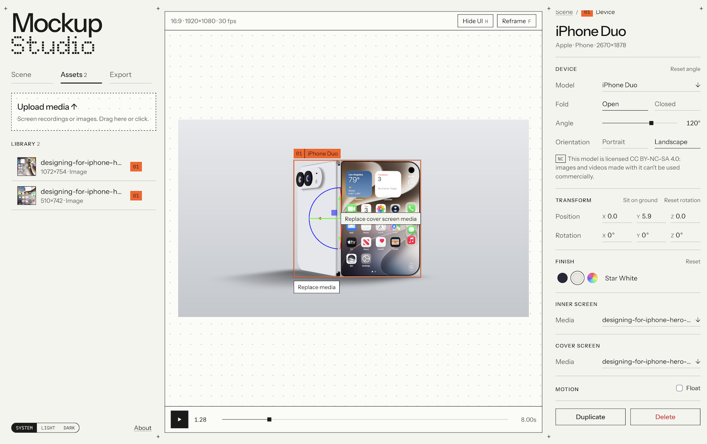

Mockup Studio is a lightweight platform that allows designers to compose mockup devices in a 3D scene and export them as images or videos within the browser itself.
Concept
As a designer, having clean and beautiful looking mockups makes all the difference in showcasing your product. Most of these are gated behind paywalls or watermarked during export, inspiring me to build my own platform for future projects. This took form as a 3D environment where users can add devices, move and pose them as they wish, and export both images and videos for free with no limits.
Technical Considerations
Some key features of Mockup Studio include:
- built with three.js, and accompanying add-ons such as HDR loader, gizmo, and camera controls
- Static Web Application: no data leaves the user’s browser or gets uploaded to a server, ensuring privacy and confidentiality
- 22 devices and counting: free 3D models taken from Sketchfab of various devices such as phones, tablets, laptops, and more are available for use
This web application is live and can be found here.
